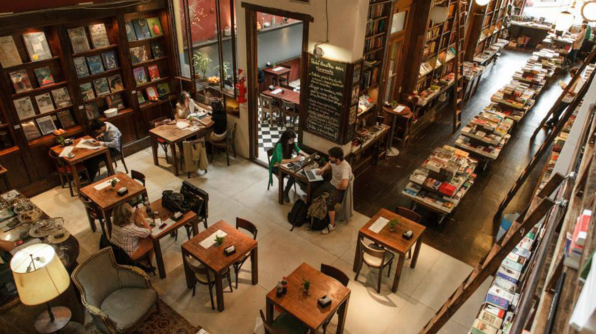
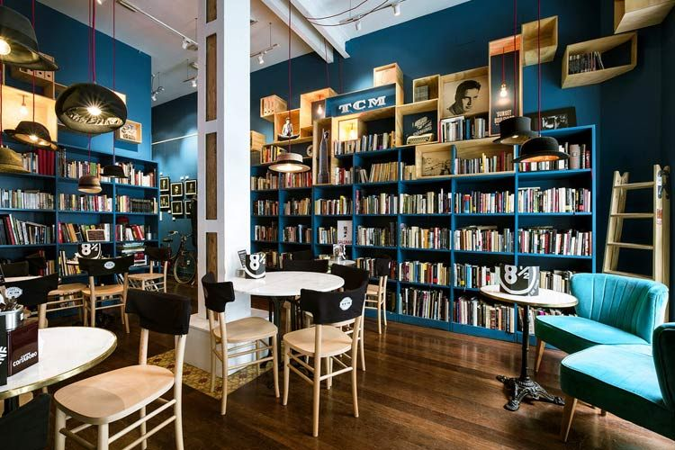
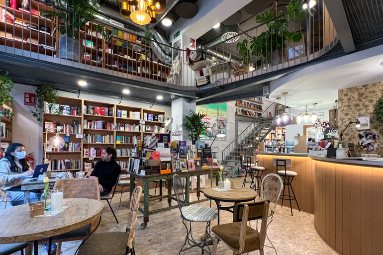

Libros con café
Libros con Café es una apasionante librería que combina dos grandes placeres de la vida: la lectura y el café. Nuestro objetivo principal es brindar un espacio acogedor y estimulante donde los amantes de los libros puedan sumergirse en un mundo literario fascinante mientras disfrutan de una deliciosa taza de café.
En "Libros con Café", creemos en el poder de la lectura para enriquecer la mente, nutrir el alma y fomentar la imaginación. Nuestra amplia selección de libros abarca una variedad de géneros, desde clásicos atemporales hasta las últimas novedades literarias. Trabajamos arduamente para ofrecer una cuidadosa curación de títulos que satisfagan los gustos y las preferencias de nuestros clientes, ya sean apasionados lectores, estudiosos ávidos o aquellos que simplemente buscan una escapada literaria ocasional.


